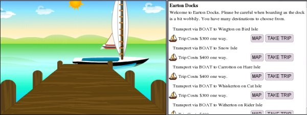
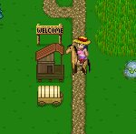

Since there are so many islands here, travelling by ship is a routine occurrence. You will find docks on all the large islands, and some of the smaller ones.
It will be a very good idea for you to keep notes on which docks have ships going to which islands, because no dock has ships which go to every other dock. The cost of trips depends upon how far away your destination is. Trips are one way only.
You can also travel, on some islands, by wagon. Wagon fares are much cheaper than boat fares, but only one wagon route crosses water. Still, they are very useful for getting around on large islands.
Some NPC's (non-player characters) have the power to teleport or "jump" you from one location to another. Make sure you write down the names and locations of these people when you find them; they are very useful!